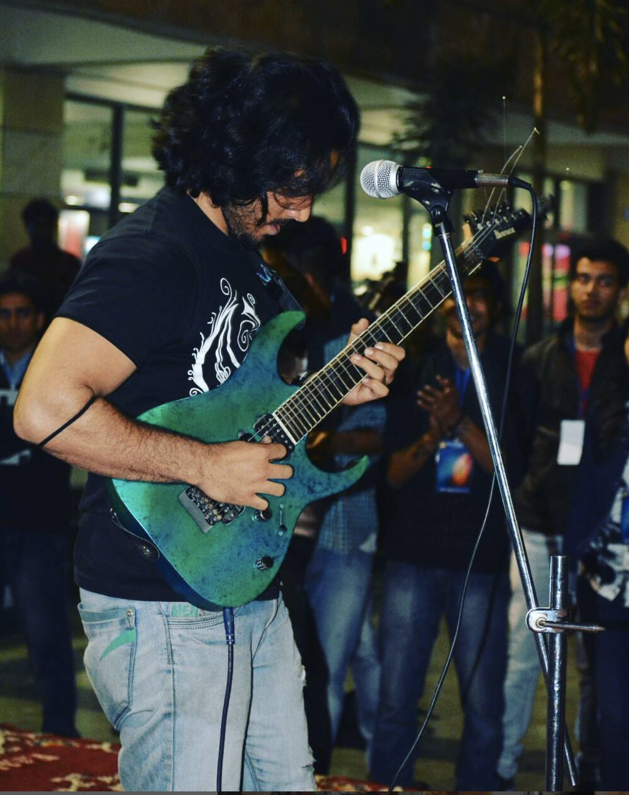

What Else?
Academic Genealogy

My Ph.D advisor is Prof. Eric R. Bittner. He worked with John C. Light at the University of Chicago and obtained his Ph.D. He is currently the Hugh Roy and Lillie Cranz Cullen Distinguished Professor at Department of Physics at University of Houston. In the summer of 2001, he worked as visiting faculty at the Center for Non-Linear Studies at Los Alamos National Lab and in 2023 he served as the Ulam Distinguished Scholar at the CNLS.
Podcasting

I cohost a podcast called "The Knowmads Podcast" where I discuss a variety of topics including science, philosophy, and personal development. Our guests come from all areas of STEM, philosophy, psychology, different cultural backgrounds and ethnicities. The podcast aims to inspire curiosity and lifelong learning.
Feel free to check it out on YouTube, Spotify, or Apple Podcasts!
Sports
Former competitive cricketer. Avid follower of cricket, football, and chess. I strongly believe in the power of sports for personal development.
Music
I have always been a musician at heart. If not a physicist I would pursue music as my career. My journey as a musician was very organic. Although it is important to say that I'm the son of the greatest musician in the world "Mr. Rajieve Saarang". My father never forced me to do music but he made sure that Music was always there during my grooming stages. I have seen Jam sessions as a very small kid without ear plugs. So the damage has been done. Music has been engrained in me. I had met with an accident when I was in the 5th grade and I designate that incident to be life changing, a canon event if you would like that. I started loving physics and picked up the guitar. I have never stopped since then. I was in the school band during high school. I was the front man in my undergraduate band. Music is my expression and it has helped me grow, it has shaped my personality and through music I explored the various cultures of the world. I have a youtube channel that goes way back, I'm not super active but you surely see me hit puberty to a fully grown adult on that channel while enjoying the music I have to share.
Interested in Collaborating?
Whether it's about physics, music, or anything in between, I'm always open to interesting conversations and collaborations.
Get in Touch